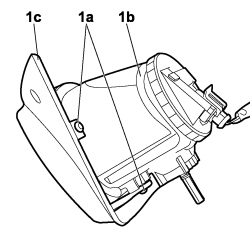

7055A39 LEFT SIDE FRONT GRILLE - R.R.
- Path
- Procedures > 70 FITTINGS > 7055 MOULDING AND PROTECTION > 7055A exterior mouldings > 7055A39 LEFT SIDE FRONT GRILLE - R.R.
- Kind
- repair procedure (removal / refitting; the operation number is the code)
- Applies to
- engines: 1.4 8v, 1.6 16v, 1.3 JTD 16V, 1.9 JTD 8V; all production periods
- Interactive page
- https://sloeber94.github.io/elrnDB-fDbl/en/#/223000203
Applies to: engines: 1.4 8v, 1.6 16v, 1.3 JTD 16V, 1.9 JTD 8V; production: da 12/03; only with equipment: MY 2005
 Removing
Removing
 Refitting
RefittingTurn the ignition key to the OFF position.
1. Undo the bolts (1a) securing the left front grille (1b) partly extract it from its housing taking care over the left fog light electrical connection.

Applies to: engines: 1.4 8v, 1.6 16v, 1.3 JTD 16V, 1.9 JTD 8V; production: da 12/03; only with equipment: MY 2005
1. Undo the bolts (1a) securing the left fog light (1b) to the left front grille (1c) and remove it from the vehicle.

Applies to: engines: 1.4 8v, 1.6 16v, 1.3 JTD 16V, 1.9 JTD 8V; production: da 12/03; only with equipment: MY 2005
Refitting
RemovingCheck that the left front grille is not damaged.
Position the left fog light on the left front grille and secure it using the fastening bolts.
Place the left front grille in position and secure it to the front bumper tightening the fixing bolts.